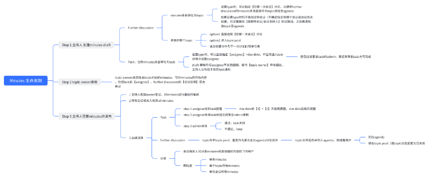
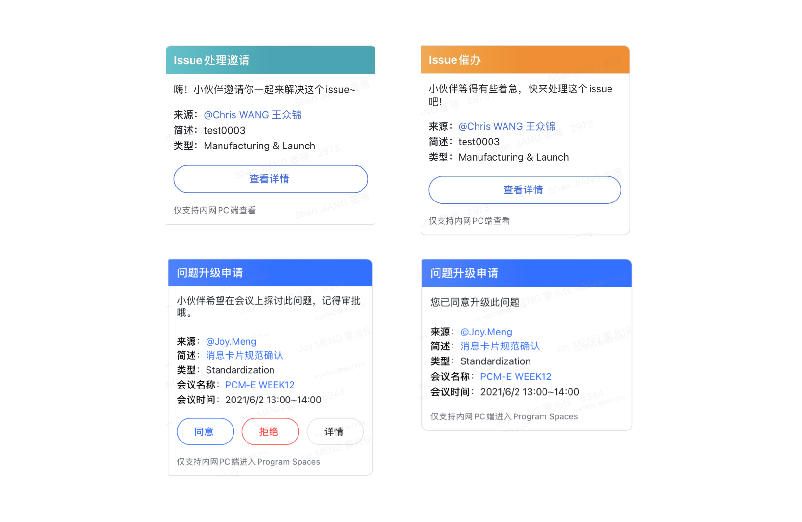
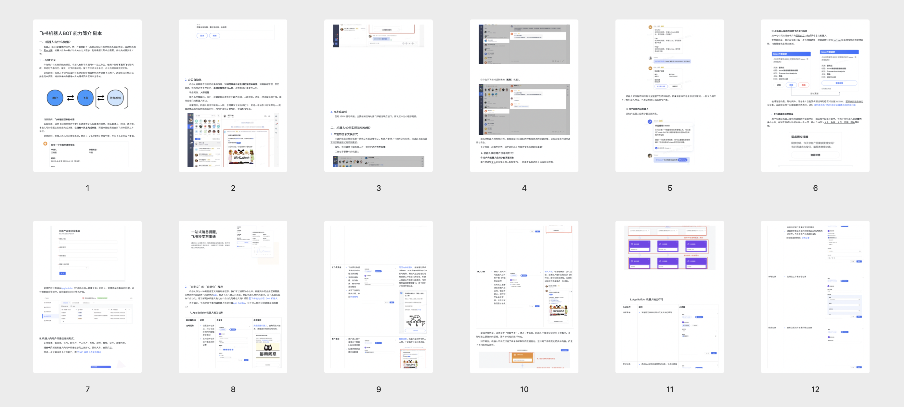

Context
NIO Shanghai was experiencing a transplant phase of business platform from WeCom to Lark to enhance interdepartmental cooperation by integrating productivity tools and automating information communication. I joined the Program and Program Management Department of NIO as product management intern, researching, designing, and reporting the new needs and requirements during the transplanting.
Process
Research
I conducted internal UX research across 3 different departments via interviews and usability tests to really understand their current workflow and pain points.
To best understand and communicate the outcome of the qualitative data gathered, I diagramed the information flow between different entities.

Design
I generated prototypes of different kinds of message cards for more than 10 scenarios, utilizing Axure and Lark message card builder to make sure quick production and high fidelity.

I implemented workflow automation with lark no-code development platform to expedite the interdepartmental communication between users and vehicle reservation center.
Report
I synthesized all the Lark documentation about message card and Lark bots to make it easier for the colleagues understand why transplanting to Lark and how the key features work

I reported directly to the head of department since the first day for the discovered need and proposed designs periodically.